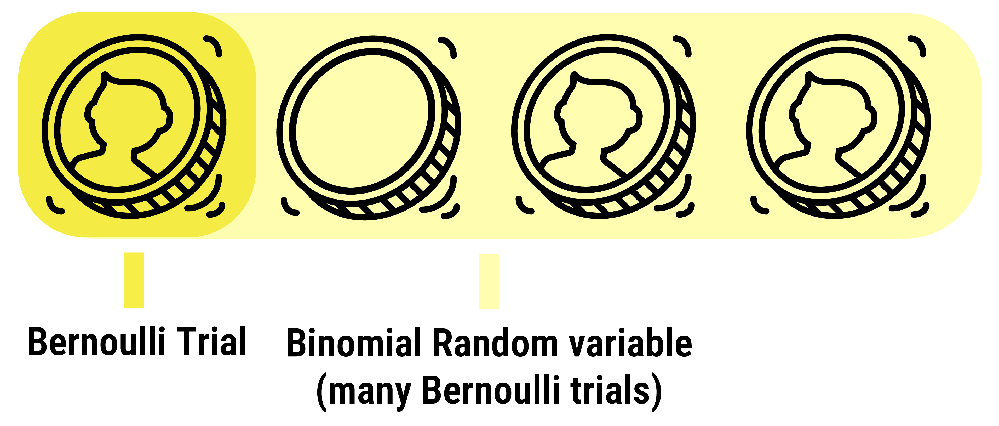

Week 2
Probability distributions
What we’ll cover this week
A quick review of different probability distributions
Discrete probability distributions
Bernoulli, Binomial, and Poisson
Continuous probability distributions
Uniform, Normal, and Exponential
Discrete probability distributions
Bernoulli random variables
Bernoulli random variables describe an outcome of an experiment or event that has only two outcomes (commonly referred to as Bernoulli trials)
Common applications in ecology are for species presence/absence or for individuals that are alive or dead.
Usually coded as 0/1 in a datasheet, with 1 the positive outcome (alive, present) and 0 the negative (dead, absent) 1
Bernoulli random variables
We say that a random variable \(X\) follows a Bernoulli distribution: \(X \sim Bernoulli(p)\) or \(P(X) = p\)
Most familiar example is a coin toss, where \(P = 0.50\)
Binomial random variables
A binomial random variable is simply a collection of multiple, independent Bernoulli trials
Binomial random variables
A binomial random variable is simply a collection of multiple, independent Bernoulli trials

Example: Seed germination experiment
Take three seeds. The seeds are independent (harvested from different plants of the same species). We soak them in water for 24 hours and plant them into a planting mix. After 7 days, we record successful germinations. Let \(Y\) be the number of successful germinations. Our sample space is then defined as:
| 1st seed | 2nd seed | 3rd seed | Germinations |
|---|---|---|---|
| Y | Y | Y | 3 |
| Y | Y | N | 2 |
| Y | N | Y | 2 |
| N | Y | Y | 2 |
| Y | N | N | 1 |
| N | Y | N | 1 |
| N | N | Y | 1 |
| N | N | N | 0 |
Example: Seed germination experiment
Suppose there is a 50% chance of each seed germinating:
\[ P(Y) = P(N) = 1/2 \]
Then: \[ P(Y = 3) = P(YYY)\\ = P(Y)P(Y)P(Y)\\ = 1/2 * 1/2 * 1/2 = 1/8\\ P(Y = 2) = P(YYN \ or \ YNY \ or \ NYY)\\ = P(YYN) + P(YNY) + P(NYY)\\ = P(Y)P(Y)P(N) + P(Y)P(N)P(Y) + P(N)P(Y)P(Y)\\ = 1/8 + 1/8 + 1/8 = 3/8 \]
Example: Seed germination experiment
We can use a line graph to show the probability distribution of \(Y\).
\[Y \sim Bernoulli(n, p)\] \[Y \sim Bernoulli(3, 0.5)\]
p(y) |
|
3/8 | T T
| | |
1/8 | T | | T
|--|--|--|--|--> y
0 1 2 3Poisson random variables
The Poisson distribution is used to describe the number of occurrences of an event recorded in a sample of fixed area or during a fixed time interval. It’s used frequently in spatial and temporal statistics (and for count data!)
Examples include number of plants in a quadrat, number of birds visiting a feeder over a period of time, etc.
Modeled as \(X \sim Poisson(\lambda)\)
\(\lambda\), the “intensity”, is the average value of the number of occurrences of the event in each sample. Critical in spatial point processes!
Continuous
Continuous random variables
The probability distribution of a continuous random variable is described by a probability density curve such that the area under the curve corresponds to the probability
With continuous random variables, we can no longer find probability of a discrete outcome (i.e., specific value), instead we use intervals
Examples of continuous random variables include body mass, wing length, tree height, concentration, etc.
We’ll discuss uniform, normal, and standard normal distributions (but others exist including exponential, log-normal, Chi-Square, F, gamma, beta)
The uniform random variable
A uniform random variable is one that has an equal probability at each and every subinterval along the interval
The probability distribution of such a variable is a rectangle with an area under the curve equal to 1 (The First Axiom of Probability)
The normal random variable
A normal random variable is the most popular continuous probability distribution due to its fit of so many empirical datasets (i.e., continuous data infuenced by small and unrelated random effects that are normally distributed)
Also referred to as a “Gaussian” probability distribution, normal curve, or bell curve.
Properties of the normal random probability distribution
A random variable \(Y\) is said to have a normal distribution with parameters \(\mu\) and \(\sigma^2\) and is written as:
\[ Y \sim N(\mu, \sigma^2) \]
Total area under the distribution curve is 1 (First Axiom)
Distribution is symmtric about the expectation, \(\mu\), such that:
\[ E(Y) = \mu :\:\:\ Var(Y) = \sigma^2 \]
Properties of the normal random probability distribution
We can transform normal distributions with scaling and shifting operations. Consider two random variables \(X\) and \(Y\):
\[ X \sim N(\mu, \sigma^2) :\:\:\ Y = aX + b \]
Transforming to a standard normal probability distribution
Special case of applying a shift and scale operation in which \(a = 1/\sigma\) and \(b = -1(\mu/\sigma)\)
\[ For:\ X \sim N(\mu, \sigma), Y = aX + b \]
\[ = (1/\sigma)X - \mu/\sigma \]
\[ = \frac{X}{1} * \frac{1}{\sigma} - \frac{\mu}{\sigma} \]
\[ = \frac{X}{\sigma} - \frac{\mu}{\sigma} \]
\[ = \frac{X - \mu}{\sigma} \]
Standard normal probability distribution
\(\frac{X - \mu}{\sigma}\) –> This random variable is referred to as Z, or a Z-score!
We write that \(Z \sim N(\mu, \sigma^2\) with expectation \(\mu=0\) and variance \(\sigma^2=1\), or:)
\[ Z \sim N(0, 1) \]
The distribution is symmetric around the center \(\mu=0\)
The area between [-1, 1] (i.e., \(\mu ± \sigma\)) is 0.6826
The area between [-2, 2] is 0.9545
Standard normal probability distribution
Suppose \(Z\) is a standard normal random variable (i.e., \(Z \sim N(0, 1)\)):
\(P(Z ≤ 0) = 0.5\)
\(P(-\infty ≤ Z ≤ +\infty) = 0.5\)
\(P(Z = 1) = 0\) and in general, \(P(Z = c) = 0\) for any \(c\)
How do we find \(P(Z ≥ / ≤ z)\) for any given value of \(z\)?
Use table from a book or statistical software! (hint, draw pictures!)
Practice working with continuous probability distributions
Find the probability under the curve
\[\begin{eqnarray*} P(Z\geq 1.5) &=& 0.0668 \\ P(Z\leq 1.5) &=& 1-P(Z\geq 1.5) \\ &=& 1-0.0668 = 0.9332 \\ P(0\leq Z\leq 1.5) &=& P(Z\geq 0)-P(Z\geq 1.5) \\ &=& 0.5-0.0668 = 0.4332 \end{eqnarray*}\]
Find the probability under the curve
\[\begin{eqnarray*} P(Z\geq -0.6) &=& 1-P(Z\leq -0.6)\\ &=& 1-P(Z\geq 0.6) \\ &=& 1-0.2743 = 0.7257 \end{eqnarray*}\]
Find the probability under the curve
\[\begin{eqnarray*} P(-1.7 \leq Z\leq 1.7) &=& 2\times P(0\leq Z\leq 1.7) \\ &=& 2\times(0.5-0.0446) = 0.9108 \end{eqnarray*}\]
OR
\[\begin{eqnarray*} P(-1.7 \leq Z\leq 1.7) &=& 1-P(Z\leq -1.7 {\rm ~or~} Z\geq 1.7) \\ &=& 1-2\times P(Z\geq 1.7) \\ &=& 1-2\times 0.0446 = 1-0.0892 = 0.9108. \end{eqnarray*}\]
Transforming a general normal variable to a standard normal variable
A random variable \(Y\) may be normally distributed with parameters \(\mu\) and \(\sigma^2\) and written as:
\[ Y\sim N(\mu,\sigma^2) \]
For example, \(Y\sim N(20,3^2)\) stands for normal distribution with \(\mu=20,\sigma^2=9\).
Suppose \(Y\sim N(\mu,\sigma^2)\), then a very useful transformation is:
\[ Z=\frac{Y-\mu}{\sigma}\sim N(0,1) \]
Transforming a general normal variable to a standard normal variable
For \(Y\sim N(20,3^2)\) (i.e. \(\mu=20,\sigma^2=9\)), we have \[\begin{eqnarray*} P(20\leq Y\leq 23) &=& P(20-\mu\leq Y-\mu\leq 23-\mu) \\ &=& P\left(\frac{20-\mu}{\sigma}\leq \frac{Y-\mu}{\sigma}\leq \frac{23-\mu}{\sigma}\right) \\ &=& P\left(\frac{20-20}{3}\leq Z\leq \frac{23-20}{3}\right) \\ &=& P(0\leq Z\leq 1) \\ &=& P(Z\geq 0)-P(Z\geq 1) \\ &=& 0.5-0.1587 = 0.3413 \end{eqnarray*}\]
Z-scores and interpretation
Given a value \(y\), the term: \[ z=\frac{y-\mu}{\sigma} \] is called the z-score corresponding to y. It represents the number of standard deviations \(y\) is from \(\mu\).
For \(Y\sim N(20,3^2)\),
23 is \(1\sigma\) away from \(\mu=20\).
20 is \(0\sigma\) away from \(\mu=20\) (i.e. at \(\mu=20\)).
24 is \(\frac{4}{3}\sigma\) away from \(\mu=20\).
17 is \(-1\sigma\) away from \(\mu=20\).
Transforming a general normal variable to a standard normal variable
Suppose \(Y\sim N(20,3^2)\), what is \(P(Y\leq 15.5)\)?
\[\begin{eqnarray*} P(Y\leq 15.5) &=& P\left(\frac{Y-\mu}{\sigma}\leq \frac{15.5-\mu}{\sigma}\right) \\ &=& P\left(Z\leq \frac{15.5-20}{3}\right) \\ &=& P(Z\leq -1.5) \\ &=& 0.0668 \end{eqnarray*}\]